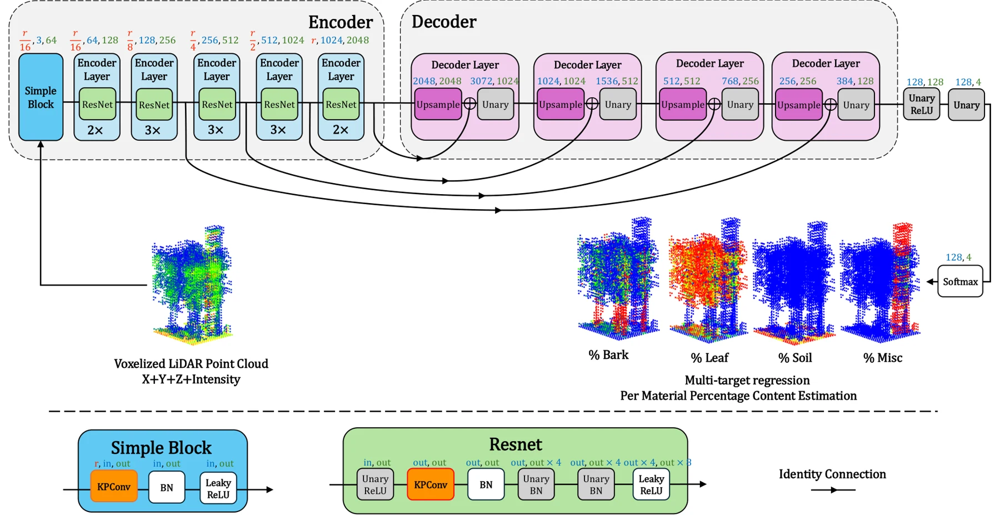

3D deep learning
3D LiDAR Voxel Content Estimation

IEEE Transactions on Geoscience and Remote Sensing, 2026.
Overview
3D LiDAR Voxel Content Estimation is a deep-learning framework for estimating the percentage of bark, leaf, soil, and manmade material within individual forest voxels using only 3D coordinates and LiDAR intensity. The architecture combines Kernel Point Convolutions (KPConv) with an encoder–decoder structure and skip connections to capture spatial context and perform multi-target regression of material composition. Using LiDAR data simulated in DIRSIG for Harvard Forest, the research investigates how limited observational information can reveal mixed material content within voxels while addressing imbalanced material distributions. This work supports detailed characterization of forest structure and composition from LiDAR observations.
Interactive demonstration
Interactive 3D Voxelized Forest
A closer look

From LiDAR observations to material fractions
A KPConv encoder–decoder with skip connections predicts four material-content channels from position and intensity.